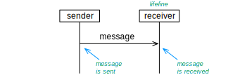
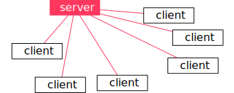
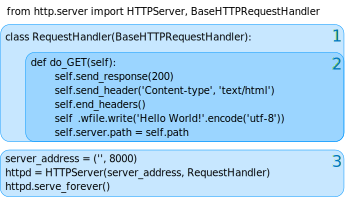

HTTP and JSON
In this week, we will communicate via HTTP and build our own little server for that. This server will be able to serve a simple website and we will use it to store data from the Raspberry Pi.
You remember that we worked with something similar in the second week, where we created a website on an Apache web server. This time, we use the webserver to build a smart home system, and we also program it in Python instead of using Apache.
Learning Goals
Goals: After this week, you will be able to:
- Create your own webserver in Python.
- Serialize data in Python via JSON.
- Send complex data types via HTTP.
- Assemble an overall system.
- Know more about HTTP, JSON, client-server, request-response.
Example: A Smart Home System
Let’s first look at an example system. Two weeks ago you learned how to connect the Sense HAT and the Raspberry Pi to a Python program, so that you could read values from the Sense HAT and also turn on its LEDs. Imagine now that this Raspberry Pi is part of a system you want to install at home, for instance to check the temperature while you are away, and maybe switch on the heater before you arrive home. The sensors report their values to a server. Since this server is somewhere in a data center, we say that it’s running in the cloud. The sensors report their values periodically to the server, and the server keeps track of the values sent. When we want to know the temperature at home, we can simply ask the web server with a browser to present us the last measured temperature value.
During this week, we want to implement such a system, with the Raspberry Pi and Sense HAT as our sensor, and another Raspberry Pi as the web server. For this, we need several elements:
- We need to know more about the WWW and the HTTP protocol.
- We need to transform data so we can send it.
- We need to build a web server in Python.
Think a bit: What can be some benefits of using HTTP, a web server and a browser as elements in this system?
Sequence Diagrams and Message Patterns
From today on we start to think a bit more about the patterns of interactions between computers, that is, in which sequence they send messages between each other. For that, we use a special type of diagram, called sequence diagram. Below you see a very simple one. The vertical lines (top to bottom) are called lifelines and define a computer or any other communicating element. The box at the start of the lifeline describes what the lifeline represents. Here, we just apply role names, and call one of them sender and the other one receiver. The horizontal arrow represents a message that travels between the computers.

Messages can be lost, for instance when somebody plugs out a cable, disturbs the wireless signal or when some part of the network in between fails. We can show that a message is lost by letting it run into a big cross:
The above interaction follows a simple patternthat we call single message. As you can see, a problem with this message pattern is that messages can get lost, and neither the sender nor the receiver detect it. For that reason, we often use other message patterns or build applications so that they can handle message losses. The next pattern we are going to look at is already an improvement.
The Request-Response Message Pattern
Another message pattern is request-response, shown in the diagram below. It is used when one computer (the requestor) wants to get some information from another one (the responder).
Another benefit of the request-response pattern is that the requestor knows that the responder has received the request once it receives the response. Therefore, we often use a request-response pattern even when we are not interested in the content of the response, just to be sure that the original request has ben sent. The response in this case is also called acknowledgement, and the entire pattern is called a handshake. In case the requestor does not receive a response within some time, it can for instance try again and send another request. To sum up, the request-response pattern is used in two cases:
When the requestor needs some data from the responder, i.e., when the requestor wants to know something.
When the requestor only wants to tell something to the responder, but wants to know of the responder actually received the data.
WWW – The World Wide Web
Many people do not distinguish between the Internet and the World Wide Web.[^1] The two are, however, quite different: The Internet, as you have learned by now, is a system of interconnected computer networks that communicate via IP and enable services like email, video streaming, or internet telephony. It also enables the World Wide Web, which is a collection of documents that you can access from specific servers.
The Client-Server Model
When you access a website, this involves an interaction between two computers: The web server that stores the website, and your computer with a web browser that acts as a client.

Both the client and the server are computers, but within this interaction model they behave quite different: The server doesn’t know anything about the clients before they connect, and just waits for clients. Once a client makes a request, it answers this request with a response. The server serves the request. In the basic case of serving a website, the server only reacts on the requests. All interactions are initiated (started) by the client.
Often, servers are powerful machines, running in a data center and serving many clients. But that is not always the case. A server can also be a tiny computer, serving only a single or a few other clients. The term client-server only refers to the roles they have in the interactions: the client takes initiative and the server responds.
HTTP
Once two computers communicate, we have to ensure that they understand each other. This is where protocols come in. They define a set of rules that all partners have to follow. You already know something about the Internet Protocol, IP. This protocol defines how we can send data packages between computers connected networks that together make up the Internet. TCP is a protocol that is used to control IP packets, so that they arrive in a particular order and are resubmitted when they get lost.[^2]
Sending data packets does not yet ensure that computers can actually understand the data. This is why there are protocols defined on top of TCP and IP, for the different types of applications that we want to use on the internet. For accessing websites, this protocol is HTTP, or Hypertext Transfer Protocol. HTTP is based on a pattern that is called request-response, meaning that all interactions consist of a request message, sent by the client, and a corresponding response, sent by the server. To get a website, the request looks as follows:
GET /index.html HTTP/1.1
Host: www.example.com
Note that the keyword GET shows that the browser would like to access a resource. It is followed by /index.html, which is the path of the website we would like to read. The corresponding response can look like this:[^3]
HTTP/1.1 200 OK
Date: Mon, 23 May 2005 22:38:34 GMT
Content-Type: text/html; charset=UTF-8
Content-Length: 138
Last-Modified: Wed, 08 Jan 2003 23:11:55 GMT
Server: Apache/1.3.3.7 (Unix) (Red-Hat/Linux)
ETag: "3f80f-1b6-3e1cb03b"
Accept-Ranges: bytes
Connection: close
<html>
<head>
<title>An Example Page</title>
</head>
<body>
Hello World, this is a very simple HTML document.
</body>
</html>
The answer indicates the HTTP version, followed by the token 200 OK, which means that the response actually contains the requested information. When a site is not accessible, the code is a 404 Not Found, which you may have seen when browsing the web. Following the header information is the actual content of the document we want to access. Here, it is a HTML site, beginning with the <html> tag. This language describes websites with some markup, so that you can have tables and arrange all sorts of elements and render them in a browser. So when you request a website, it’s basically these two messages that are exchanged between your browser (the client) and the web server.
Web Server in Python
It’s simple to create a web server in Python.

Of course, much of the code running the server is hidden in libraries, but our code controls some interesting parts of the server.
We define a class RequestHandler. This class has the only task to define how we answer a request.
When a request comes to the web server, the method do_GET(self) is called by the server. In this method we can compute our response. In this case, we return response code 200 (which means OK), set the content type in the header, and then set the content to be Hello World. We encode the string into bytes, using Unicode utf-8 encoding.
These lines start the actual server. We create an instance of the class HTTPServer and then tell it to start.
Don’t worry too much about some of the code here, but focus on the do_GET() method, which gets called once the request arrives and then computes an answer.
Serialization of Data
When two computers communicate, they send their data as a sequence of bits or bytes, which in turn are transformed into electrical or optical signals that then travel via cables or fibers. But how do we get such a sequence of bits from the data? Somehow we must ensure that data that is translated into a sequence of bits also can be translated back again once we receive them. For this, we need serialization methods.
If we just want to transfer text, there is for instance the ASCII standard that explains how letters, numbers and other signs are transformed into bits. A text (or string) is a sequence of characters, An A, for instance, is represented by the bits 100 0001. The Unicode standard expands ASCII to convert a much larger set of symbols, including Ê, ¯, and Â. Unicode also encodes emoji. To transfer text or emoji, we must hence know ho they are encoded (for instance which specific version of Unicode) and look up the bits and bytes in a table. (We serialized the data.) The other way round, when we receive bits and want to create letters from it, we deserialize the data, which means that we look up which letters the bits correspond to.
Serialization is not only useful when we want to transmit data from one computer to another. It is also useful when we want to store a data structure into a file. A file is storing a series of bytes, and serialization determines how we get these bytes from a data structure.
Now imagine we want to transfer more structured data, for instance the measurements of a sensor in a house. We would like to send the current time, the temperature and the humidity. To do that, we could of course send a string that just lists the different data items in a sequence, for instance:
12:05 20.0 54.3
When we then deserialize the data, i.e., construct the measurement values at the receiver side, we need to know in which sequence these values were and put everything correct back together. For a simple problem, this is possible, but you can imagine how many mistakes may happen here!
Serialization With JSON
Instead of inventing our method of putting data into a data sequence each time, we use a more robust and standardized way of packing the data together. Have a look at the following:
{"time": "12:05", "temperature": 20.0, "humidity": 54.3}
This way of writing data is called JSON, pronounced “Jason,” and an abbreviation for JavaScript Object Notation, because it was originally inspired by how JavaScript serialized its objects. It may also remind you of a Python dictionary. The example above is only a very simple one. The data can also be nested, i.e., a data field can refer to a JSON structure that for instance declares the data fields separate from each other or adds the information in which unit the measurement is given, for instance as follows:
{"time": {"hour":12,
"minutes": 5,
"seconds": 0},
"temperature": {"value": 20.0,
"unit": "celcius"},
"humidity": {"value": 54.3,
"unit": "percent"}}
There’s a lot of history in such data formats, and sometimes it’s not even technical reasons why one is used or the other, or how they look in detail. Another format used for similar purposes is called XML, or Extensible Markup Language. In this language, the same piece of data could look as follows:
<dataset>
<data name="time" value="12:05"/>
<data name="temperature" value="20.0"/>
<data name="humidity" value="54.3"/>
</dataset>
XML looks a lot more like the HTML that is used to encode a website. Since JSON is a bit simpler to use, we will stick with it in the following.
JSON in Python
For Python there is a library to convert data structures into JSON and back again. This is how you import the library:
We assume that the data structure is stored as a Python dictionary:
measurement = {'time': '12:05', 'temperature': 20.0, 'humidity': 54.3}
There is an operation json.dumps() to create the JSON-serialized string out of a data structure.
string = json.dumps(measurement)
print(string)
The output will be the following:
{"time": "12:05", "humidity": 54.3, "temperature": 20.0}
The resulting string in JSON almost looks like the original Python string. This is because Python dictionaries look very similar to JSON, but this also works for more complex data types.
The other way round will also work; The function json.loads() takes a JSON string and creates a Python data type from it. For instance, we can do the following:
measurement = json.loads('{"time": "12:05", "humidity": 54.3, "temperature": 20.0}')
The result is that the variable measurement now has data of type dict. Now we can work on the data like with any other Python data type, and integrate it in our application.
So, simplified said, with JSON we can convert any Python data type into a string that follows the JSON specification. It is then easy to store or transmit this string (as a series of bytes), and transform it back into data again.